KHAI BÁO CƠ SỞ SẢN XUẤT, NƠI LƯU GIỮA HÀNG HÓA
Theo điều 56 Thông tư 38 quy định, tổ chức cá nhận có trách nhiệm thông báo cơ sở gia công, sản xuất hàng hóa xuất khẩu cho Chi cục Hải quan nơi dự kiến làm thủ tục nhập khẩu theo quy định tại Điều 58 Thông tư này (dưới đây viết tắt là Chi cục Hải quan quản lý) thông qua Hệ thống. Riêng đối với doanh nghiệp chế xuất không phải thực hiện thông báo này.
Để thực hiện nhập và khai báo trên phần mềm ECUS5VNACCS, doanh nghiệp thực hiện theo các bước hướng dẫn sau đây:
1. Bước 1: Nhập thông tin cơ sở sản xuất
Từ giao diện chính phần mềm bạn vào menu “Nghiệp vụ khác / Khai báo cơ sở sản xuất, nơi lưu giữ”:
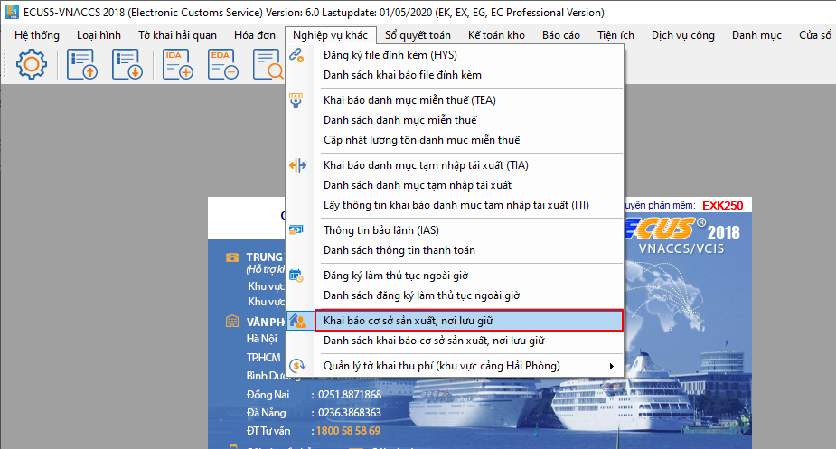
Giao diện chức năng khai báo cơ sở sản xuất hiện ra như sau:
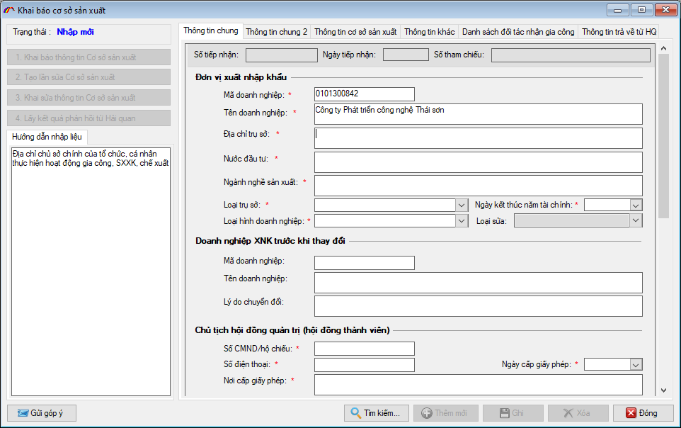
a. Nhập thông tin tab “Thông tin chung”
a.1. Thông tin đơn vị nhập khẩu
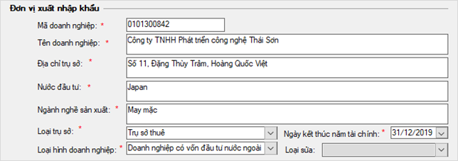
Nhập vào các thông tin về MST, tên doanh nghiệp, địa chỉ trụ sở, nước đầu tư và ngành nghế sản xuất.
Loại trụ sở: Bạn chọn 1 trong 2 loại từ danh sách “Trụ sở thuê” hoặc “Trụ sở thuộc sở hữu của doanh nghiệp”
Loại hình doanh nghiệp: Chọn loại hình doanh nghiệp đúng với thực tế của đơn vị từ danh sách có sẵn.
Ngày kết thúc năm tài chính: Nhập vào ngày kết thúc năm tài chính, ví dụ 31/12 (phần năm bạn nhập bất kỳ, có thể để là năm khai báo)
a.2. Thông tin doanh nghiệp XNK trước khi thay đổi
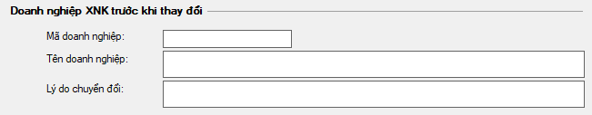
Chỉ nhập mục này nếu doanh nghiệp đã từng thay đổi thông tin trước đó.
a.3. Chủ tịch hội đồng quản trị (hội đồng thành viên)
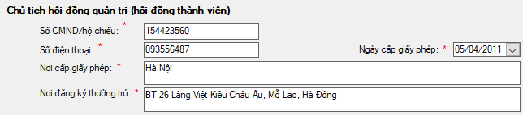
Doanh nghiệp nhập vào thông tin cho chủ tịch hội đồng quản trị của nghiệp (trường hợp doanh nghiệp không có chủ tịch hội đồng quản trị thì nhập vào thông tin người đứng đầu doanh nghiệp như Giám đốc):
Số CMND/hộ chiếu: Nhập vào số chứng minh nhân dân hoặc hộ chiếu
Ngày cấp giấy phép: Nhập vào ngày cấp ghi trên chứng minh hoặc hộ chiếu
a.4. Thông tin tổng giám đốc
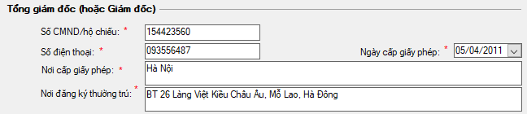
Nhập vào thông tin tổng giám đốc hoặc giám đốc doanh nghiệp:
Số CMND/hộ chiếu: Nhập vào số chứng minh nhân dân hoặc hộ chiếu của giám đốc
Ngày cấp giấy phép: Nhập vào ngày cấp ghi trên chứng minh hoặc hộ chiếu
a.5. Ngành nghề, năng lực sản xuất và thiết bị máy móc
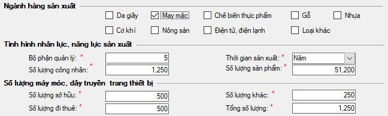
Doanh nghiệp đánh dấu vào các ngành nghề sản xuất đang hoạt động, nhập vào tình hình nhân lực và năng lực sản xuất của mình:
Bộ phận quản lý: Nhập vào số lượng bộ phận quản lý của doanh nghiệp
Số lượng công nhân: Nhập vào số lượng công nhân mà doanh nghiệp đang có
Thời gian sản xuất: Nhập vào chu kỳ sản xuất sản phẩm (theo ngày, tuần, tháng, quý, năm)
Số lượng sản phẩm: Nhập vào số lượng sản phẩm có thể sản xuất được trong chu kỳ đã chọn ở trên, ví dụ 51200 sản phẩm trong 1 năm.
Tiếp theo là thông tin về số lượng máy móc, dây truyền trang thiết bị của doanh nghiệp, trong đó ghi rõ tổng số lượng do doanh nghiệp sở hữu, đi thuê.
a.6. Thông tin tuân thủ pháp luật và ghi chú khác
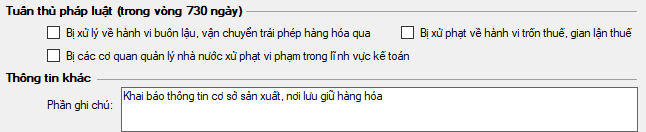
b. Nhập thông tin tab “Thông tin chung 2”
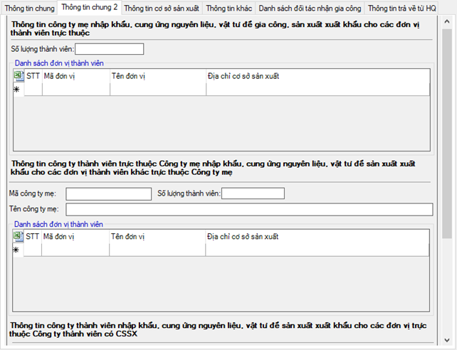
Đơn vị nhập vào thông tin công ty mẹ, công ty thành viên trực thuộc và công ty thành viên cung ứng nếu có (trường hợp không có thì bỏ qua)
c. Nhập thông tin tab "Thông tin cơ sở sản xuất"
c.1. Thông tin cơ sở sản xuất và lượng máy móc
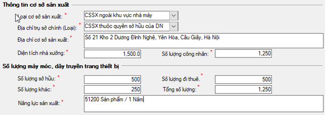
c.2. Thông tin chi tiết ngành nghề sản xuất
Doanh nghiệp đánh dấu vào các ngành nghề hoạt động, sau đó nhấn nút “Chu kỳ, năng lực sản xuất” bên cạnh để nhập thông tin chi tiết:
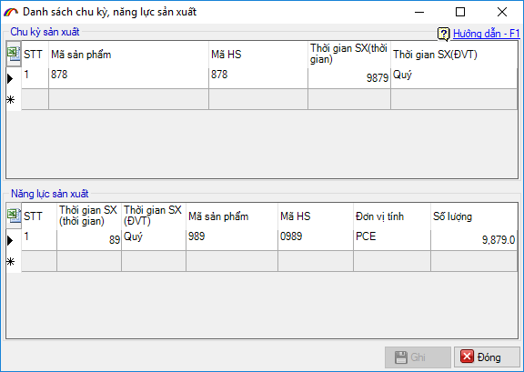
d. Nhập thông tin tab “Thông tin khác”
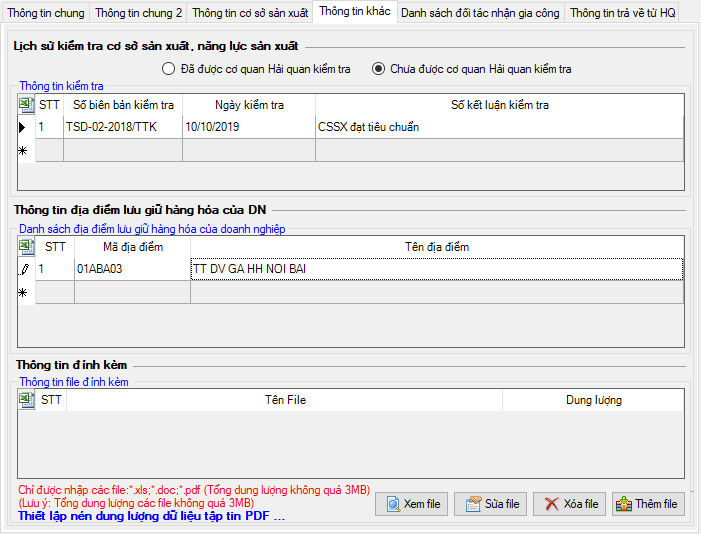
Doanh nghiệp nhập vào thông tin về lịch sử kiểm tra cơ sở sản xuất, năng lực sản xuất, thông tin địa điểm lưu giữ hàng hóa và file đính kèm nếu có.
e. Nhâp thông tin tab “Danh sách đối tác nhận gia công”
Trường hợp có đối tác nhận gia công lại, bạn nhập đầy đủ thông tin về đối tác, hợp đồng ký kết giữa hai bên:
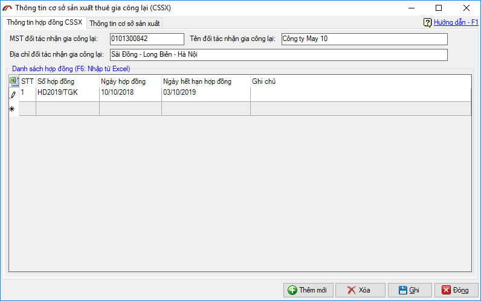
Sau đó nhập thông tin CSSX và năng lực sản xuất của đối tác thuê gia công lại tại tab “Thông tin cơ sở sản xuất”:
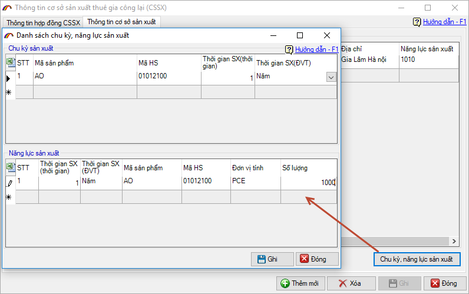
Sau khi nhập xong thông tin cho tất cả các tab, bạn kiểm tra lại để chắc chắn các thông tin đã chính xác, nhấn nút “Ghi” để lưu lại và chuyển sang bước khai báo lên cơ quan Hải quan.
Bước 2: Khai báo thông tin cơ sở sản xuất lên hệ thống Hải quan
Bạn nhấn vào “Khai báo thông tin cơ sở sản xuất” để tiến hành gửi lên hệ thống Hải quan:
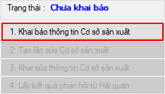
Chọn chữ ký số khai báo trong danh sách hiện ra (lưu ý lúc này chữ ký số đã phải được cắm vào máy tính của bạn):
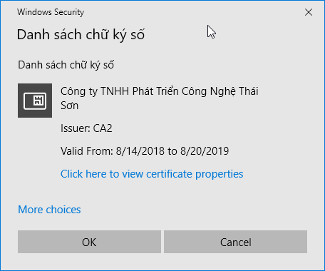
Nhập mã PIN cho thiết bị chữ ký số vừa chọn:
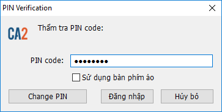
Tiếp nhận thành công hệ thống sẽ trả về thông báo như sau:
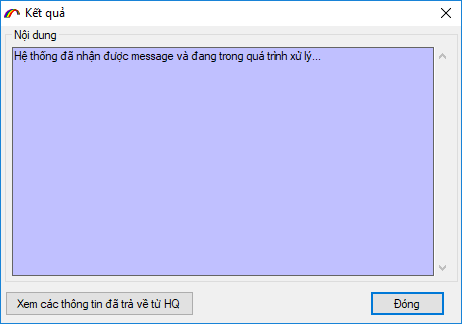
Bạn nhấn vào “Lấy kết quả phản hồi từ Hải quan” cho đến khi nhận được kết quả chấp nhận trả về từ cơ quan Hải quan:
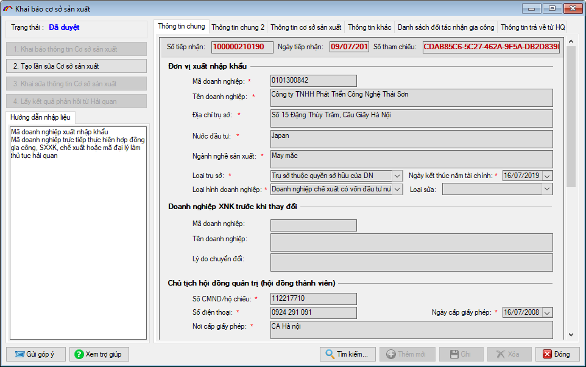
Lưu ý: Thông tin CSSX chỉ được gửi một lần duy nhất lên hệ thống, sau khi đã được hải quan chấp nhận nếu có sửa đổi bổ sung, doanh nghiệp sử dụng chức năng khai báo sửa thông tin CSSX trên phần mềm:
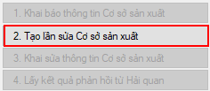
Bản quyền © thuộc về Công ty TNHH Phát triển công nghệ Thái Sơn